Data valuation: which data helps, and for what?
- Data valuation measures a contribution to a specified objective.
- The learning procedure and evaluation population determine what the score means.
- Today: influence functions and Shapley background, then KAIROS in depth.
1 / 34
The case for trustworthy AI
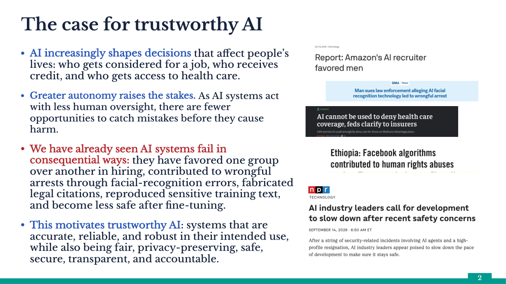
The case for trustworthy AI 2 AI increasingly shapes decisions that affect people’s lives: who gets considered for a job, who receives credit, and who gets access to health care. Greater autonomy raises the stakes. As AI systems act with less human oversight, there are fewer opportunities to catch mistakes before they cause harm. We have already seen AI systems fail in consequential ways: they have favored one group over another in hiring, contributed to wrongful arrests through facial-recognition errors, fabricated legal citations, reproduced sensitive training text, and become less safe after fine-tuning. This motivates trustworthy AI: systems that are accurate, reliable, and robust in their intended use, while also being fair, privacy-preserving, safe, secure, transparent, and accountable.
Data is a powerful point of intervention
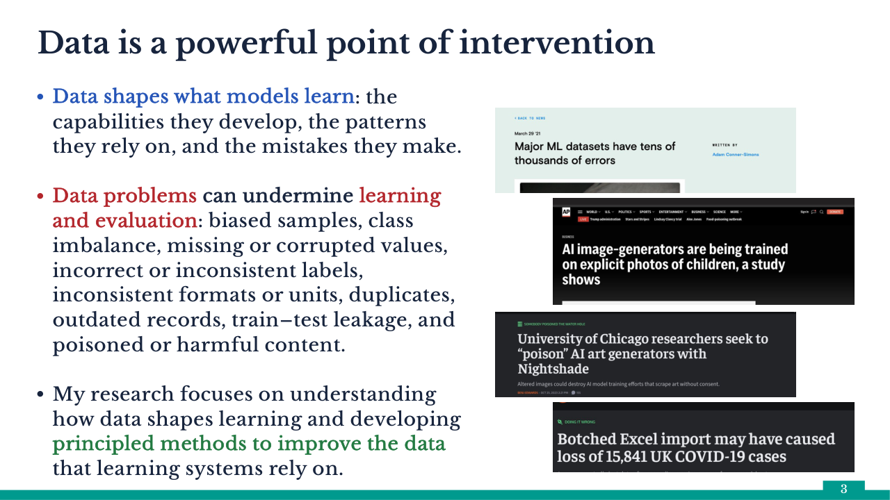
Data is a powerful point of intervention 3 Data shapes what models learn: the capabilities they develop, the patterns they rely on, and the mistakes they make. Data problems can undermine learning and evaluation: biased samples, class imbalance, missing or corrupted values, incorrect or inconsistent labels, inconsistent formats or units, duplicates, outdated records, train–test leakage, and poisoned or harmful content. My research focuses on understanding how data shapes learning and developing principled methods to improve the data that learning systems rely on.
Data valuation
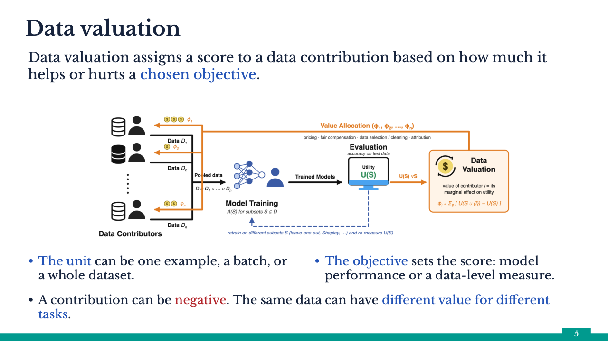
Data valuation Data valuation assigns a score to a data contribution based on how much it helps or hurts a chosen objective. 5 The unit can be one example, a batch, or a whole dataset. The objective sets the score: model performance or a data-level measure. A contribution can be negative. The same data can have different value for different tasks.
What data valuation enables
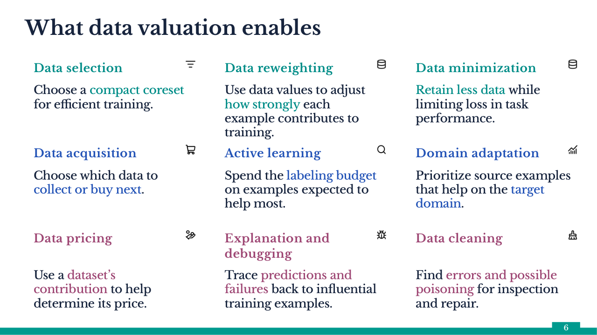
What data valuation enables 6 Data selection Choose a compact coreset for efficient training. Data reweighting Use data values to adjust how strongly each example contributes to training. Data minimization Retain less data while limiting loss in task performance. Data acquisition Choose which data to collect or buy next. Active learning Spend the labeling budget on examples expected to help most. Domain adaptation Prioritize source examples that help on the target domain. Data pricing Use a dataset’s contribution to help determine its price. Explanation and debugging Trace predictions and failures back to influential training examples. Data cleaning Find errors and possible poisoning for inspection and repair.
From model-dependent value to KAIROS
- Explain what a local influence score measures.
- Explain how Shapley allocates contribution across coalitions.
- Read KAIROS as a change of objective: value data without fixing a downstream learner.
6 / 34
KAIROS changes the objective before computing value
- Influence and Data Shapley inherit the selected learner’s loss or predictive performance.
- KAIROS values the data through discrepancy from a reference distribution.
- The reference and discrepancy now define what “valuable” means.
15 / 34
Model-agnostic data valuation
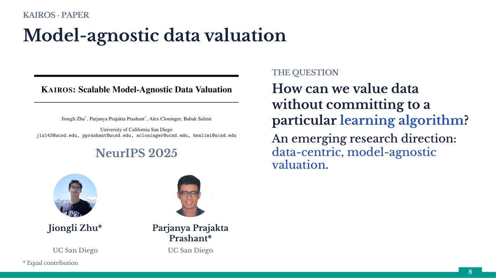
KAIROS · PAPER Model-agnostic data valuation NeurIPS 2025 THE QUESTION Jiongli Zhu* UC San Diego Parjanya Prajakta Prashant* UC San Diego * Equal contribution 8 How can we value data without committing to a particular learning algorithm? An emerging research direction: data-centric, model-agnostic valuation.
A data-level objective for valuation
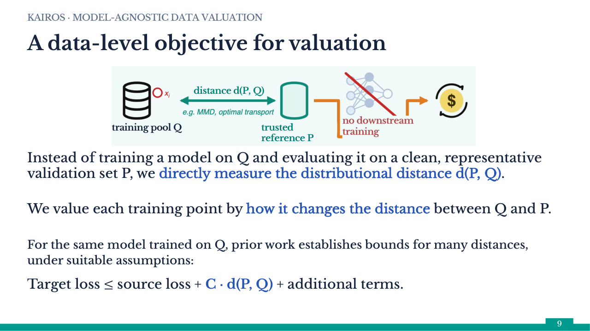
KAIROS · MODEL-AGNOSTIC DATA VALUATION A data-level objective for valuation distance d(P, Q) training pool Q trusted reference P no downstream training Instead of training a model on Q and evaluating it on a clean, representative validation set P, we directly measure the distributional distance d(P, Q). We value each training point by how it changes the distance between Q and P. For the same model trained on Q, prior work establishes bounds for many distances, under suitable assumptions: Target loss ≤ source loss + C · d(P, Q) + additional terms. 9
From a dataset discrepancy to a point’s value
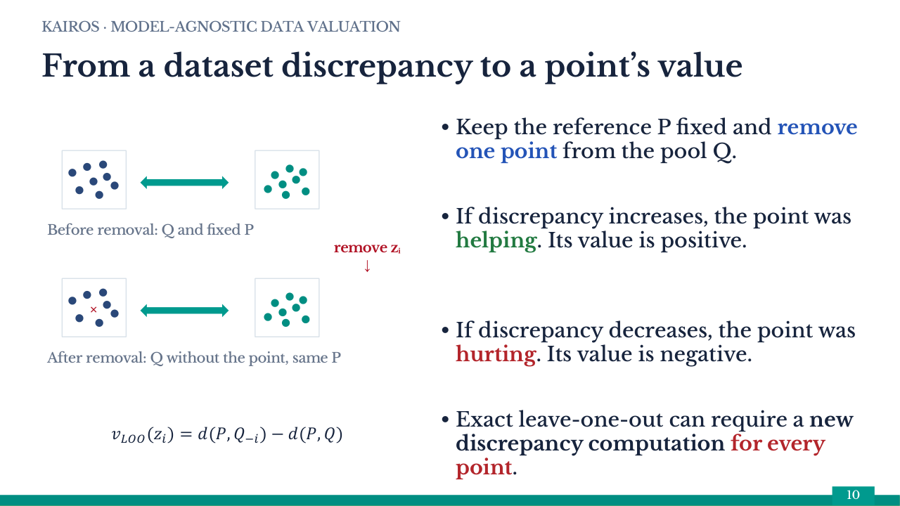
KAIROS · MODEL-AGNOSTIC DATA VALUATION From a dataset discrepancy to a point’s value Before removal: Q and fixed P Keep the reference P fixed and remove one point from the pool Q. If discrepancy increases, the point was helping. Its value is positive. × remove zᵢ ↓ After removal: Q without the point, same P If discrepancy decreases, the point was hurting. Its value is negative. Exact leave-one-out can require a new discrepancy computation for every point. 𝑣𝐿𝑂𝑂(𝑧𝑖)=𝑑(𝑃,𝑄−𝑖)−𝑑(𝑃,𝑄) 10
Which distance?
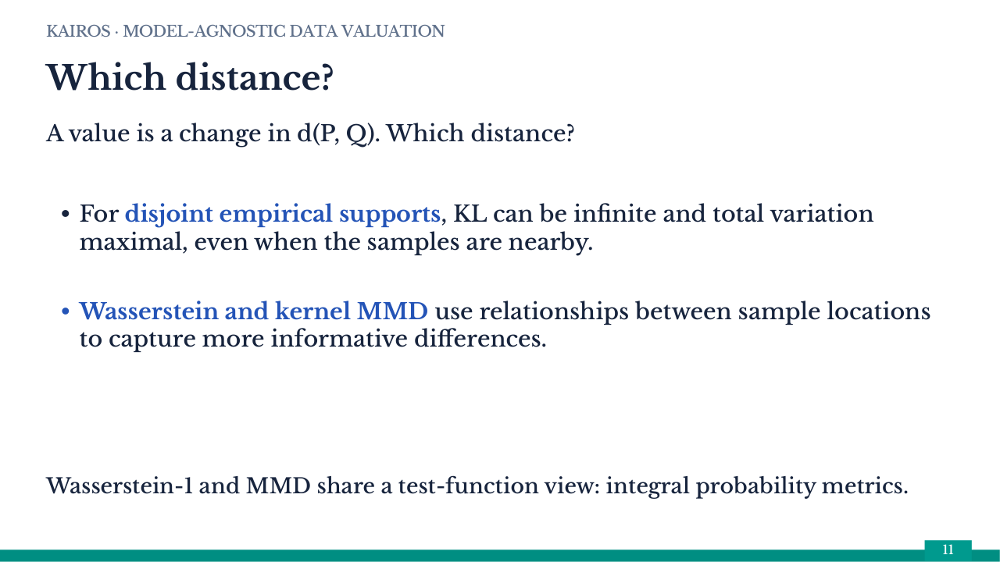
KAIROS · MODEL-AGNOSTIC DATA VALUATION Which distance? A value is a change in d(P, Q). Which distance? For disjoint empirical supports, KL can be infinite and total variation maximal, even when the samples are nearby. Wasserstein and kernel MMD use relationships between sample locations to capture more informative differences. Wasserstein-1 and MMD share a test-function view: integral probability metrics. 11
Both are integral probability metrics
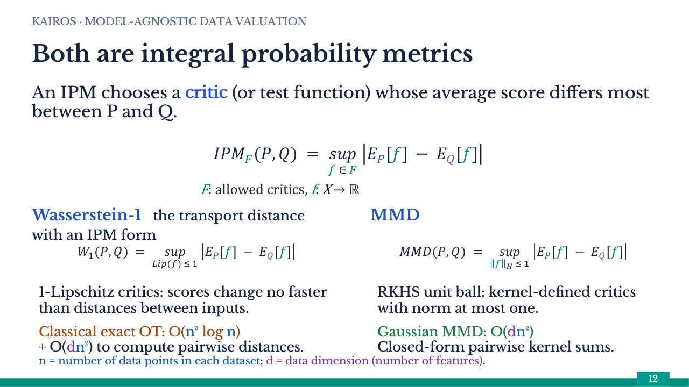
KAIROS · MODEL-AGNOSTIC DATA VALUATION Both are integral probability metrics An IPM chooses a critic (or test function) whose average score differs most between P and Q. 𝐼𝑃𝑀𝐹(𝑃,𝑄) = 𝑠𝑢𝑝𝑓 ∈ 𝐹 𝐸𝑃[𝑓] − 𝐸𝑄[𝑓] Wasserstein-1 the transport distance with an IPM form 𝑊1(𝑃,𝑄) = 𝑠𝑢𝑝𝐿𝑖𝑝(𝑓) ≤ 1 𝐸𝑃[𝑓] − 𝐸𝑄[𝑓] 1-Lipschitz critics: scores change no faster than distances between inputs. MMD 𝑀𝑀𝐷(𝑃,𝑄) = 𝑠𝑢𝑝𝑓𝐻 ≤ 1 𝐸𝑃[𝑓] − 𝐸𝑄[𝑓] RKHS unit ball: kernel-defined critics with norm at most one. n = number of data points in each dataset; d = data dimension (number of features). 12 F: allowed critics, f: X → ℝ Classical exact OT: O(n³ log n) + O(dn²) to compute pairwise distances. Gaussian MMD: O(dn²) Closed-form pairwise kernel sums.
RKHS and MMD: three simple ideas
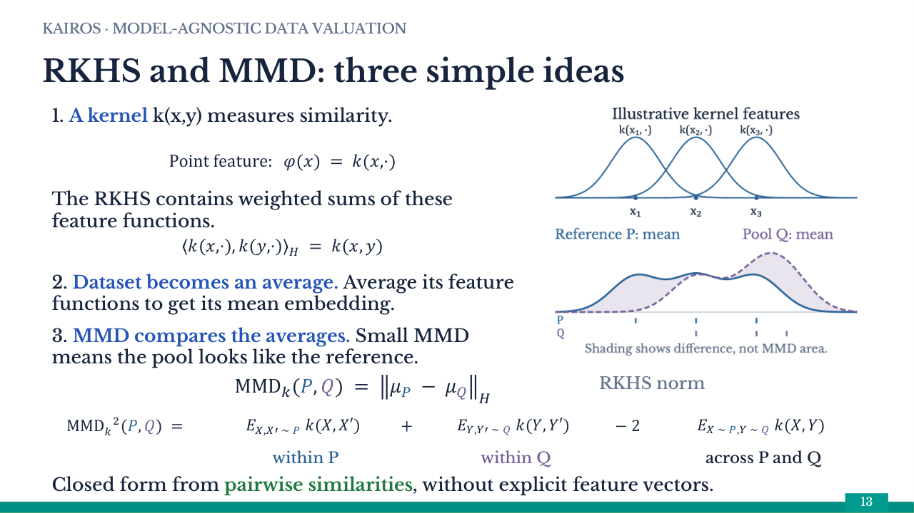
KAIROS · MODEL-AGNOSTIC DATA VALUATION RKHS and MMD: three simple ideas 1. A kernel k(x,y) measures similarity. 2. Dataset becomes an average. Average its feature functions to get its mean embedding. 3. MMD compares the averages. Small MMD means the pool looks like the reference. MMD𝑘(𝑃,𝑄) = 𝜇𝑃 − 𝜇𝑄𝐻 MMD_k(P,Q) = ||μ_P−μ_Q||_H Closed form from pairwise similarities, without explicit feature vectors. 13 MMD𝑘2(𝑃,𝑄) = MMD_k²(P,Q) = 𝐸𝑋,𝑋′ ∼ 𝑃 𝑘(𝑋,𝑋′) E_{X,X′~P} k(X,X′) + + 𝐸𝑌,𝑌′ ∼ 𝑄 𝑘(𝑌,𝑌′) E_{Y,Y′~Q} k(Y,Y′) − 2 − 2 𝐸𝑋 ∼ 𝑃,𝑌 ∼ 𝑄 𝑘(𝑋,𝑌) E_{X~P,Y~Q} k(X,Y) within P within Q across P and Q RKHS norm 𝑘(𝑥,·), 𝑘(𝑦,·)𝐻 = 𝑘(𝑥,𝑦) ⟨k(x,·), k(y,·)⟩_H = k(x,y) The RKHS contains weighted sums of these feature functions. Point feature: 𝜑(𝑥) = 𝑘(𝑥,·) Point feature: φ(x) = k(x,·)
First-order influence of a training point
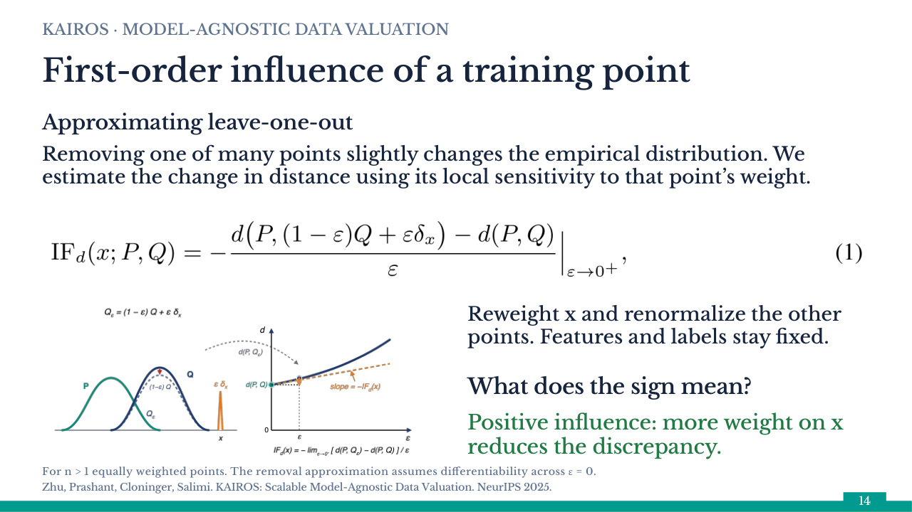
KAIROS · MODEL-AGNOSTIC DATA VALUATION First-order influence of a training point Zhu, Prashant, Cloninger, Salimi. KAIROS: Scalable Model-Agnostic Data Valuation. NeurIPS 2025. What does the sign mean? Positive influence: more weight on x reduces the discrepancy. Approximating leave-one-out Removing one of many points slightly changes the empirical distribution. We estimate the change in distance using its local sensitivity to that point’s weight. Reweight x and renormalize the other points. Features and labels stay fixed. For n > 1 equally weighted points. The removal approximation assumes differentiability across ε = 0. 14
IPM sensitivity: two terms
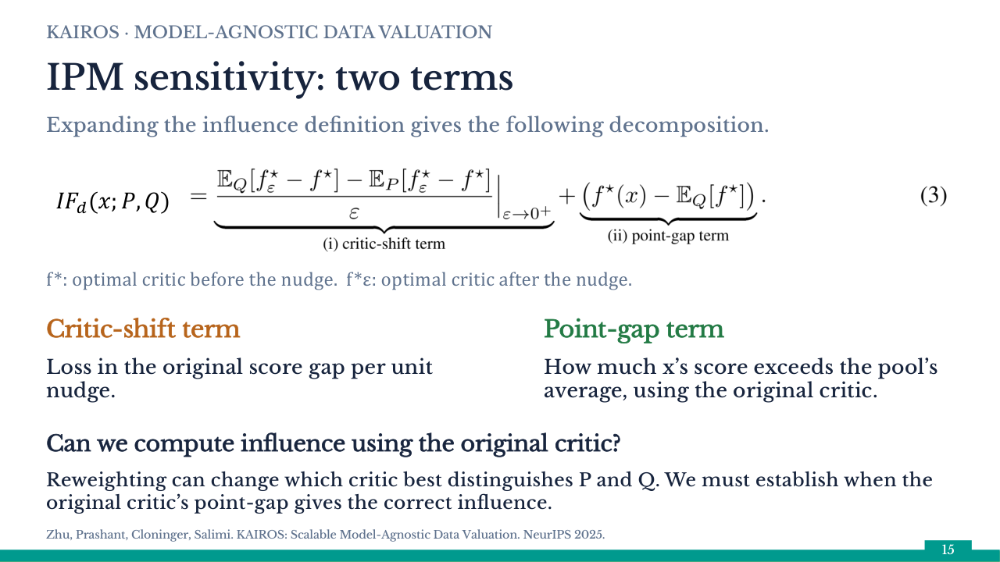
KAIROS · MODEL-AGNOSTIC DATA VALUATION IPM sensitivity: two terms Expanding the influence definition gives the following decomposition. Zhu, Prashant, Cloninger, Salimi. KAIROS: Scalable Model-Agnostic Data Valuation. NeurIPS 2025. 𝐼𝐹𝑑(𝑥;𝑃,𝑄) IFd(x;P,Q) f*: optimal critic before the nudge. f*ε: optimal critic after the nudge. Critic-shift term Loss in the original score gap per unit nudge. Point-gap term How much x’s score exceeds the pool’s average, using the original critic. Can we compute influence using the original critic? Reweighting can change which critic best distinguishes P and Q. We must establish when the original critic’s point-gap gives the correct influence. 15
Closed-form MMD influence and its cost
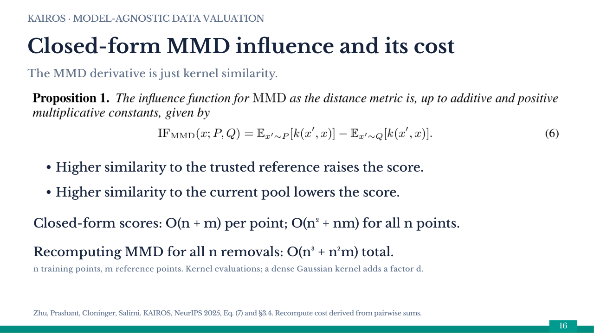
KAIROS · MODEL-AGNOSTIC DATA VALUATION Closed-form MMD influence and its cost The MMD derivative is just kernel similarity. Higher similarity to the trusted reference raises the score. Higher similarity to the current pool lowers the score. Closed-form scores: O(n + m) per point; O(n² + nm) for all n points. Recomputing MMD for all n removals: O(n³ + n²m) total. Zhu, Prashant, Cloninger, Salimi. KAIROS, NeurIPS 2025, Eq. (7) and §3.4. Recompute cost derived from pairwise sums. 16 n training points, m reference points. Kernel evaluations; a dense Gaussian kernel adds a factor d.
Do the scores predict the effect of removing data?
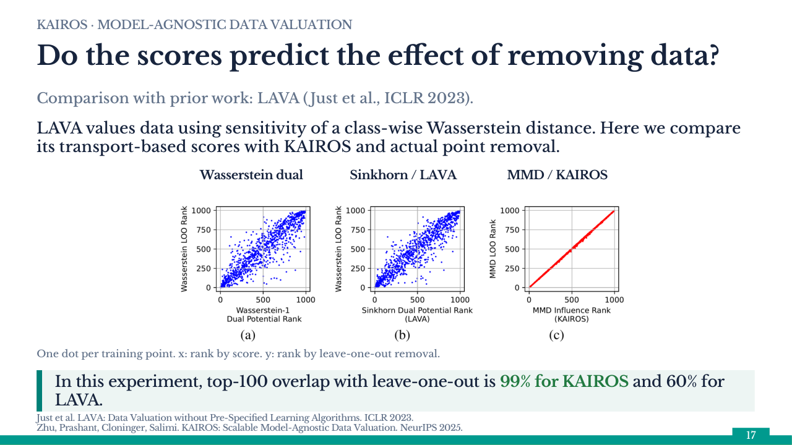
KAIROS · MODEL-AGNOSTIC DATA VALUATION Do the scores predict the effect of removing data? Comparison with prior work: LAVA (Just et al., ICLR 2023). LAVA values data using sensitivity of a class-wise Wasserstein distance. Here we compare its transport-based scores with KAIROS and actual point removal. Wasserstein dual Sinkhorn / LAVA MMD / KAIROS One dot per training point. x: rank by score. y: rank by leave-one-out removal. In this experiment, top-100 overlap with leave-one-out is 99% for KAIROS and 60% for LAVA. Just et al. LAVA: Data Valuation without Pre-Specified Learning Algorithms. ICLR 2023.Zhu, Prashant, Cloninger, Salimi. KAIROS: Scalable Model-Agnostic Data Valuation. NeurIPS 2025. 17
Properties of KAIROS valuation
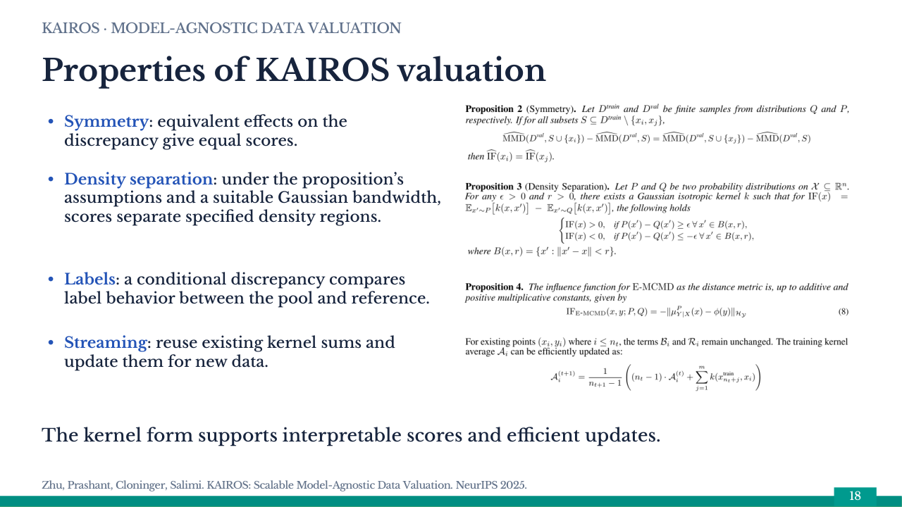
KAIROS · MODEL-AGNOSTIC DATA VALUATION Properties of KAIROS valuation Symmetry: equivalent effects on the discrepancy give equal scores. Density separation: under the proposition’s assumptions and a suitable Gaussian bandwidth, scores separate specified density regions. Labels: a conditional discrepancy compares label behavior between the pool and reference. Streaming: reuse existing kernel sums and update them for new data. The kernel form supports interpretable scores and efficient updates. Zhu, Prashant, Cloninger, Salimi. KAIROS: Scalable Model-Agnostic Data Valuation. NeurIPS 2025. 18
A bound linking discrepancy to transfer loss
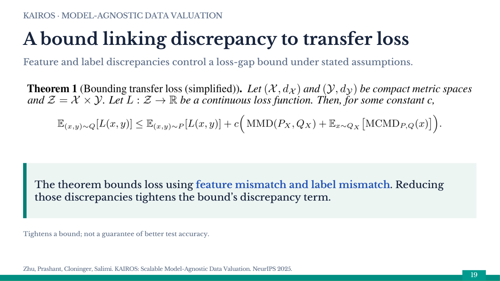
KAIROS · MODEL-AGNOSTIC DATA VALUATION A bound linking discrepancy to transfer loss Feature and label discrepancies control a loss-gap bound under stated assumptions. The theorem bounds loss using feature mismatch and label mismatch. Reducing those discrepancies tightens the bound’s discrepancy term. Tightens a bound; not a guarantee of better test accuracy. Zhu, Prashant, Cloninger, Salimi. KAIROS: Scalable Model-Agnostic Data Valuation. NeurIPS 2025. 19
Finding corrupted examples early
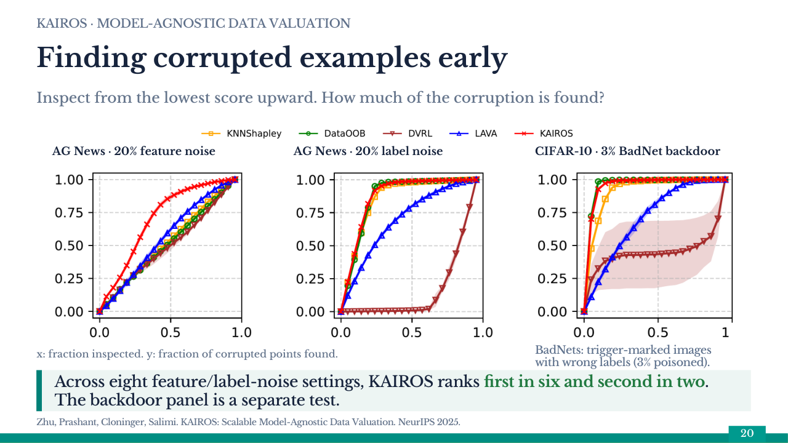
KAIROS · MODEL-AGNOSTIC DATA VALUATION Finding corrupted examples early Inspect from the lowest score upward. How much of the corruption is found? AG News · 20% feature noise AG News · 20% label noise CIFAR-10 · 3% BadNet backdoor x: fraction inspected. y: fraction of corrupted points found. Across eight feature/label-noise settings, KAIROS ranks first in six and second in two. The backdoor panel is a separate test. Zhu, Prashant, Cloninger, Salimi. KAIROS: Scalable Model-Agnostic Data Valuation. NeurIPS 2025. 20 BadNets: trigger-marked images with wrong labels (3% poisoned).
Testing the ranking and scaling to ImageNet
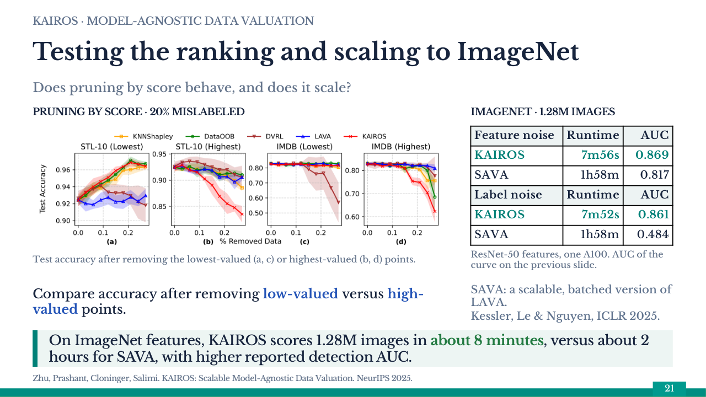
KAIROS · MODEL-AGNOSTIC DATA VALUATION Testing the ranking and scaling to ImageNet Does pruning by score behave, and does it scale? PRUNING BY SCORE · 20% MISLABELED Test accuracy after removing the lowest-valued (a, c) or highest-valued (b, d) points. Compare accuracy after removing low-valued versus high-valued points. IMAGENET · 1.28M IMAGES Feature noise Runtime AUC KAIROS 7m56s 0.869 SAVA 1h58m 0.817 Label noise Runtime AUC KAIROS 7m52s 0.861 SAVA 1h58m 0.484 ResNet-50 features, one A100. AUC of the curve on the previous slide. On ImageNet features, KAIROS scores 1.28M images in about 8 minutes, versus about 2 hours for SAVA, with higher reported detection AUC. Zhu, Prashant, Cloninger, Salimi. KAIROS: Scalable Model-Agnostic Data Valuation. NeurIPS 2025. 21 SAVA: a scalable, batched version of LAVA. Kessler, Le & Nguyen, ICLR 2025.
Match the value to the data decision
- Influence estimates local response; Shapley allocates contribution to a defined game.
- KAIROS makes distributional discrepancy the objective and tests the resulting ranking.
- A useful ranking still needs verification, population checks and a justified intervention.
34 / 34